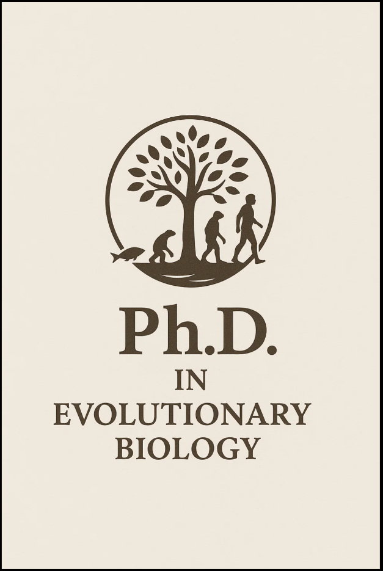

Professional Experience

- Senior Medical Writer – Vaniam Group, Aug 2021 – Present
- Prepare scientific advisory boards with oncology/hematology leaders
- Deliver timely, relevant insights in digestible formats
- Manager, Scientific Communications – Weber Shandwick, Nov 2020 – July 2021
- Senior Associate – Weber Shandwick, Apr 2019 – Nov 2020
- Contributing Writer – Applications in Plant Sciences, Sep 2017 – Feb 2020
Teaching Experience
- Graduate Student Instructor – University of Michigan, Sep 2011 – Apr 2018
Outreach & Projects
- Founder – Thought and Awe Blog, Dec 2013 – May 2016
- Writer – Michigan Science Writers, Apr 2016 – June 2018